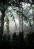
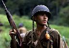

|
 |
 |
| Kid: "Trust me! You can wax your legs by rubbing gum all over
them!" |
"Free Beanie Babies? We're there!" |
Contestants for the Tallest Hair Prize |
 |
 |
 |
| Welsh dwarfed by tall grass |
"The horror, the horror." From left to right--Keck, Band and
Staros survey the carnage at the half-yearly Nordstrom's sale
|
Welsh and company in another grassy field |
 |
 |
 |
| Bell and Keck take a breather from combat |
Doll tries to help Keck |
Welsh tries to help Tella |
 |

|

|
| Staros discusses strategy with his company |
Tall to Dale, Bell and Gaff: "OK. Listen well. First I say 'duck,
duck, duck,' and when I say 'goose,' get up and run around the circle as fast
as you can."
|
Bell numbed by war |

|

|
 |
| Bell, Gaff and Witt are dumbstruck by the stunning beauty
offscreen--that's me offscreen, I tell you! |
What causes Philip Morris employees everywhere pray to John
Cusack for saving their jobs |
John Cusack reacts to the news he won't be filming love scenes
with Miranda Otto--instead, Ben "lucky bastard" Chaplin will do so
|
 |
 |

|
| Adrien Brody's true feelings about the size of his role
in the finished version of the film |
Lieutenant Colonel Tall ponders whether he should have
chicken tonight |
Doll and Welsh confer in Welsh's office |

|
 |

|
| Witt comforts Coombs as they hide from the enemy |
C-for-Charlie Company evacuates Guadalcanal Island |
Bell digs in |
 |
 |
 |
| Welsh demonstrates the proper way to drive a four-wheel drive
vehicle |
The real stars of The Thin Red Line ... a cast of thousands
and the Akela Crane camera. |
Behind the scenes on Hill 210 |
 |

|

|
| Behind the scenes on Hill 210 again |
Would you kiss this ashtray face? |
Captain Bosche |
 |

|

|
| The attack on the Japanese camp |
Doll is about to realise that what goes up must come down
|
Poor Adrien Brody! Doesn't he realise that he and an antique
rifle will not keep me from my second husband Jim's arms?!? |
 |
 |

|
| The Americans set fire to the Japanese camp |
The Japanese set fire to the American camp--what's Japanese
for "nyah nyah"? |
"A-wim-ma-way, a-wim-ma-way..." |

|
 |

|
| The most horrible moment in a soldier's life caught on film
|
Islander child |
Another islander boy |

|

|

|
| Adrien Brody, Woody Harrelson and Sean Penn react to my movie
pitch |
John Savage's reaction to my movie pitch was a little more,
uh, intense |
General Quintard |

|

|

|
| Sailor: "So this is what they meant by great job
opportunity... must get along with people and like the great outdoors"
|
A sure sign that you're NOT on the luxury vacation to Maui
|
Sergeant Storm |

|
 |
 |
| Tall shares his plan for Hill 210 domination with Welsh and
Staros |
Lieutenant Whyte |
Witt clasps his hands |


{kind=link}
{kind=link}